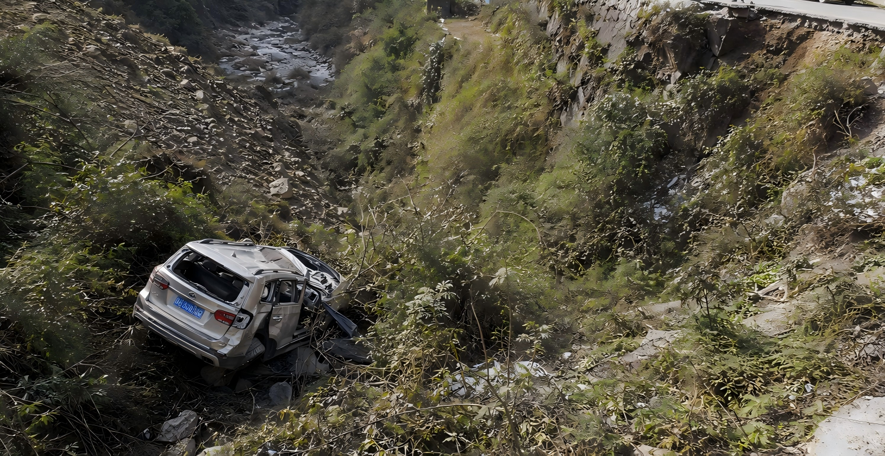

本报记者讯
九章山公路突发悲剧！高中数学教师雨天驾车冲出护栏，不幸坠谷身亡
近日，通往九章山村的盘山公路发生一起严重交通事故。一辆小型轿车在经过一处急转弯时突然失控，冲破道路护栏后坠入路旁浅谷。车内驾驶员经确认已无生命体征。
据了解，遇难者名叫田红，生前是九章高中的数学教师。
事发当日，九章山一带持续降雨，山路湿滑，部分路段能见度较低。事故发生的位置位于通往九章山村的一处连续弯道附近，道路一侧紧邻山体，另一侧则是落差较大的林地浅谷。
根据现场情况，田红驾驶的车辆在进入急转弯后疑似因路面湿滑而发生侧滑，随后失去控制，撞破护栏，连车带人一起冲出道路，最终坠落至下方浅谷。

附近居民发现异常后立即报警。救援人员赶到现场时，车辆已经严重变形。由于谷地坡面泥泞，现场救援工作一度受到影响。
遗憾的是，田红最终未能获救。
目前，相关部门初步判断事故可能与雨天路滑、弯道路况复杂有关，具体原因仍在进一步调查之中。
“她总能把枯燥的数学课讲得很有意思”
田红去世的消息传回学校后，不少学生都难以接受。
在学生们的印象中，田红并不是一位严肃古板的数学老师。相反，她性格开朗，平时很喜欢在课堂上与同学们交流，也经常主动询问学生是否真正理解了题目。
一名学生回忆道：
“田老师平时特别爱笑。她上课的时候不会只顾着讲公式，经常会突然问我们一些问题，或者拿生活里的事情举例。就算有人答错，她也不会生气，而是会顺着那个思路继续讲下去。”
另一名学生表示，田红经常在课堂上引用爱因斯坦的相对论，并借此和同学们谈一些关于生活和选择的道理。
“她总说，很多事情不能只站在一个位置上看。换一个角度，原本觉得绝对的事情，可能就会有完全不同的答案。”
学生们说，田红有时会借相对论告诉大家，成绩并不能完全定义一个人，眼前的失败也未必代表最终的结果。她希望学生在学习数学的同时，也能学会从不同角度理解问题。
“她讲这些话的时候，我们有时候还会觉得她跑题了。可是现在回想起来，那些话反而记得特别清楚。”
突如其来的横祸
事故发生后，田红所教班级的学生自发在教室中摆放了鲜花和写有悼念话语的卡片。许多学生直到看到空着的讲台，才真正意识到，那位熟悉的老师已经不会再回来。
有学生在悼念卡片上写道：
“您曾告诉我们，要从不同的角度看待世界。可是这一次，我们无论站在哪个角度，都无法接受您的离开。”
一场突如其来的车祸，带走了一名教师，也让许多学生失去了一位愿意倾听他们、陪伴他们成长的人。
对于田红的家人、同事和学生而言，这场意外来得太过突然。曾经开朗的笑声、课堂上的互动，以及那些夹杂在数学公式之间的人生道理，如今都成为了他们对田红最后的回忆。
雨仍会停，山路也终将恢复通行。但那个曾经站在讲台上，用相对论教学生理解人生的老师，却永远停在了前往九章山村的路上。